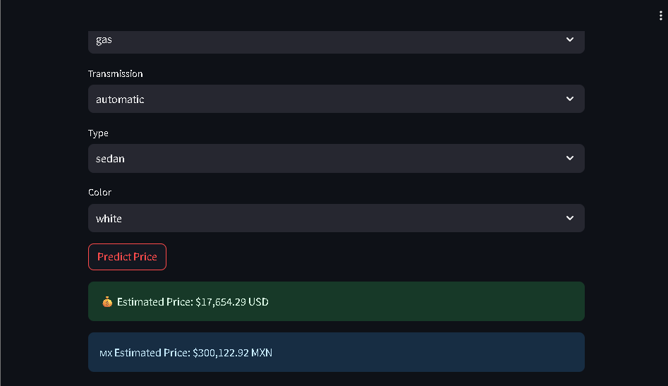
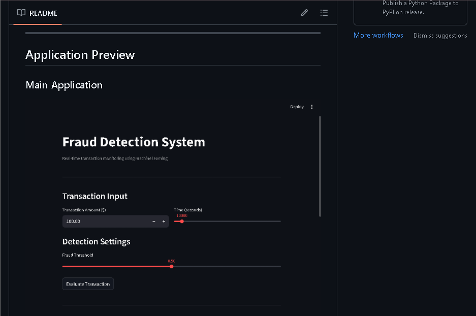
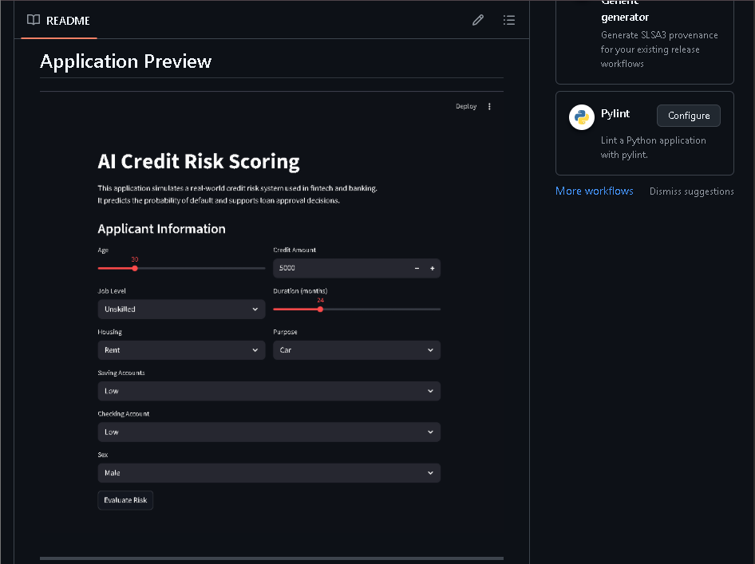

Vehicle Price AI
Used vehicle price prediction
Business problem
Used vehicle pricing can be inconsistent when decisions depend only
on intuition or limited market references.
Business value
Supports dealerships and individual sellers with a consistent,
data-driven price estimate based on vehicle characteristics.
Key results
- MAE: 3,549
- RMSE: 5,375
-
Interactive prediction and feature-importance interface
My contribution
Data cleaning, exploratory analysis, feature engineering, model
evaluation, Streamlit interface, Docker configuration and
deployment documentation.
Technologies:
Python, Pandas, Scikit-learn, Streamlit, Docker.

Fraud Detection AI
Financial transaction risk detection
Business problem
Fraudulent transactions are rare, making overall accuracy
insufficient for evaluating whether a model detects the cases that
matter most.
Business value
Helps risk teams prioritize suspicious transactions while making
the trade-off between missed fraud and false alerts visible.
Key results
- ROC AUC: ≈ 0.98
-
Adjustable decision threshold
-
ROC curve and confusion-matrix analysis
My contribution
Imbalance handling, metric selection, threshold-based decision
logic, model evaluation and interactive Streamlit application.
Technologies:
Python, Pandas, Scikit-learn, Random Forest, Streamlit.

Credit Risk AI
Credit risk classification and decision support
Business problem
Lending decisions require a consistent way to estimate default risk
and convert probabilities into an understandable recommendation.
Business value
Supports loan officers with probability-based scoring and a
simplified approve, review or reject workflow.
Key results
- Logistic Regression ROC AUC: 0.992
- Random Forest ROC AUC: 1.000
-
Probability converted into a 300–850 credit score
Results correspond to the prepared portfolio dataset and should not
be interpreted as production validation.
My contribution
Baseline definition, model comparison, ROC AUC evaluation, scoring
rules, decision workflow and Streamlit interface.
Technologies:
Python, Pandas, Scikit-learn, Logistic Regression, Random Forest,
Streamlit.
Screenshots remain available as permanent previews. Active Streamlit
demos may take a few moments to resume after inactivity.